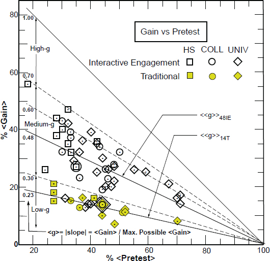

In 1998 Richard Hake published a landmark study of the effectiveness of lecture-based instruction. The results were startling, to say the least, and have profoundly influenced the educational community in a broad spectrum of disciplines. Hake measured ``learning gain'' with a ``Force Concept Inventory'' exam given as both a pre-test and a post-test in introductory physics classes. The key result, illustrated by the figure,  shows the difference in learning gain between ``interactive engagement'' classes and ``traditional'' classes over a very large dataset. Hake defined an ``interactive engagement'' class as one where the instructor reported using ``heads-on'' or ``hands-on'' activities, as described by the educational literature, to promote conceptual understanding. He defined a ``traditional'' class as one where the instructor reported little or no use of interactive engagement techniques.
The way to read the chart is to compare the colored entries, which represent traditional classrooms, with the transparent entries, which represent interactive classrooms. Closer to the diagonal line means better, and traditional courses (even when taught by otherwise stellar professors) generally aren't competitive with the interactive courses (even when taught by otherwise unremarkable professors).
Hake's data is extremely compelling: far less learning happens in traditional classrooms. If you want to look for yourself, here's the formal reference: Richard R. Hake. Interactive-engagement versus traditional methods: A six-thousand-student survey of mechanics test data for introductory physics courses. American Journal of Physics, 66(1):64-74, 1998.
If you want to watch a detailed explanation of how one (stellar) professor absorbed this lesson, I highly recommend Eric Mazur's Confessions of a Converted Lecturer. Yes, it's a very long video for the ADHD/YouTube Age (80 minutes! Are you kidding me?). And yes, it's a lecture, which is deliciously ironic in this context. But if you think you might ever need to teach somebody something (which pretty much means everybody, if you think about it), it's well worth every minute.